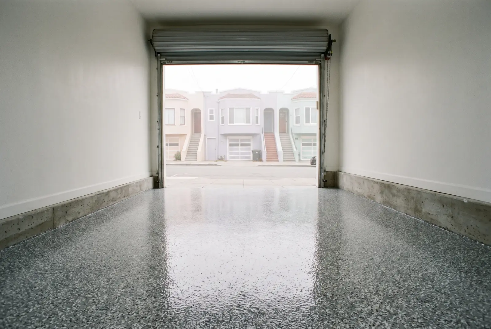

A flake epoxy garage floor that stands up to hot tires, wet shoes and road grime — installed over a diamond-ground slab so it doesn't peel.
Call Now for a Free EstimateTell us about the floor and we'll call you back the same working day.
Prefer to talk? Call (415) 792-5106

Garage floor epoxy in San Francisco turns a dusty, stained slab into a sealed floor you can sweep, mop and park on for years. Most of the garages we coat sit right under the house, so they also serve as the laundry room, the storage closet and the way everyone comes inside. A flake coating handles all of it and keeps concrete dust from tracking up the stairs.
A garage floor epoxy job starts with diamond grinding. The grinder strips old paint, sealer and stains and leaves the concrete slightly rough, which gives the resin something to grab.
Next, cracks and chipped spots are filled and ground flush. A pigmented epoxy base coat goes down, and decorative vinyl flakes are broadcast into it while it's wet. After it cures, loose flakes are scraped off and a clear topcoat seals the floor.
In a tuck-under garage we also cut the coating in around the water heater stand, laundry hookups and the bottom stair, and we can run it a few inches up the stem wall so the edges are easy to clean.
Most people call when the garage floor starts causing problems they notice every day. These are the most common signs it's time for a garage floor coating.
Concrete is porous. The top layer slowly wears down into fine dust, and anything spilled on it soaks in. Older garage slabs were often finished with a weak, chalky surface that sheds dust for decades.
Peeling happens when a coating is put on concrete that wasn't ground first. Hot tires soften the paint, it grips the tread, and it pulls away from the slab. Moisture coming up through the slab makes it worse, which is why older slabs on sandy or filled ground need a moisture test before any coating.
Proper grinding and a moisture check fix the cause instead of covering it up.
Every garage is quoted after a free on-site visit. These are the things that shape the price of garage floor epoxy:
You get a written quote at the estimate with every item listed. Book your free garage floor estimate.
Both finishes use the same prep and the same clear topcoat. The difference is how the floor looks and how well it hides everyday dirt.
| Flake epoxy | Solid color | |
|---|---|---|
| Look | Speckled, like terrazzo | Clean, single color |
| Hides dust and tire marks | Very well | Shows more |
| Texture | Light natural grip | Smooth unless grit is added |
| Best for | Daily parking, entry garages | Workshops, gyms, display garages |
Most homeowners who park inside every day pick flake. If you want a seamless, high-end look for a studio or gym, a solid color or a metallic epoxy floor may suit you better.
Most one- and two-car garages take one to two days of work. You can walk on the floor the next day, and cars can usually go back in after a few days, or the next day with a polyaspartic topcoat.
Yes. Most garages here pitch toward the door so water drains out, and the coating follows that slope. Grinding and repair take care of low spots without changing how the floor drains.
Not when the slab has been diamond-ground and the system is fully cured. Hot-tire peeling is a problem with garage paint and thin DIY kits that sit on top of the concrete instead of bonding into it.
Yes, the floor has to be clear for grinding and coating. Shelving that is bolted to the wall can usually stay if it sits a few inches off the floor, and we'll go over what needs to move at the estimate.
Need the car back fast? Read about polyaspartic floor coatings. Coating a shop or restaurant instead? See commercial epoxy flooring.
Call for a free on-site estimate — we'll measure the garage, test the slab and leave you a written quote.
Call (415) 792-5106 for a Free Estimate Request an Estimate Online